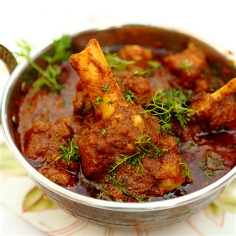

There are many kinds of non-veg options to consume around the world. But we in India only prefer three kinds, Chicken, Mutton, and Seafood.
Below are the recipes for the same.
Preparation Time: Marination: 2-3 hours, Cooking: 30 minutes
Ingredients:
Chicken – 500gms
Salt – as per
taste
Turmeric – 1ts
chili powder – 2tbs
Pepper powder – 1tbs
Garam masala – 1 tbs
Spices(Shahajeera, Cumin, Mustard, Cloves,
Cardamom, Cinnamon, Bay leaf) – 1tbs
Ginger-garlic paste: 1tbs
Dry curd: 1tbs
Green chili: 4
Onion:1
Tomatoes: 3
Cooking Method:Wash the chicken. Marinate chicken in salt, turmeric, pepper powder, garam masala, ginger-garlic paste,
chili powder, dry curd, mashed green chili, and vinegar. Let it rest for 2-3 hours< br> In a pan, add a few drops of oil along with ghee.
Upon heating, add mustard, cumin seeds, and spices and fry until aromatic. Join in onions along with green chili and fry until soft. Add tomatoes
and let them until the oil floats. Put in marinated chicken adding ginger-garlic paste, adjusting salt. Saute and cook until the oil floats.
Add a little water and let them sit for 20 minutes on a simmer. Add coriander before serving hot.
Special Tips(if any)=

Preparation Time: 30 minutes
Ingredients:
Mutton
Oil
Spices(Shahajeera, Elaichi, Cardamon, Cinnamon,
Bay leaf)
Salt
Chili Powder
Turmeric
Onion
Ginger-garlic paste
Green chili
Tomato
Garam masala
Mutton masala
Coriander powder
Tamarind juice
Coriander
Cooking Method:In a hot pan, add spices and let them fry until aromatic.
Add onions along with green chili and cook until soft. Add ginger-garlic paste and fry until the raw smell is gone. Add mutton to this gravy
and cook on simmer for 20 minutes. Upon boiling, add salt, turmeric, and chili powder. Once the mutton is half-boiled, add tomatoes and let them
cook until the oil floats. Add garam masala, Coriander powder, and mutton masala along with tamarind juice. Join in the coriander leaves and
turn off the stove.
Special Tips (if any):

Preparation Time: 30 minutes
Ingredients:
Fish
Oil
Spices(Shahajeera, Elaichi, Cardamon, Cinnamon,
Bay leaf)
Salt
Chili powder
Turmeric
Onion
Ginger-garlic paste
Green chili
Jeera-Fenugreek powder
Coriander
powder
Tamarind juice
Coriander
Cooking Method:In hot oil, add spices. Upon splutter, add onion paste and fry until the
raw smell is gone. Add turmeric, green chili, curry leaves, and ginger-garlic paste and cook until oil floats. Add chili powder, salt, and
tamarind juice and bring it to a boil. Add jeera-fenugreek powder and coriander powder. Add washed fish to this gravy and let it cook until
the pieces are soft. Add coriander leaves before until off the stove.
Special Tips (if any):
Preparation Time: 30 minutes
Ingredients:
Prawns
Oil
Salt
Chili powder
Turmeric
Garam
masala
Onion
Tomato
Ginger-garlic paste
Green chili
Coriander powder
Coriander
Cooking Method:Deep fry the
prawns and let them cool in a bowl. In the hot oil, add onions, green chili, ginger-garlic paste and let them cook. Add salt, chili powder,
turmeric, garam masala, and coriander powder, and cook with a little water until the oil floats. Add tomatoes to this gravy and make them mushy.
Now, add the fried prawns to this gravy along with coriander leaves before turning off the stove.
Special Tips (if any):